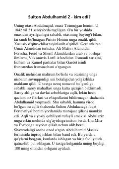

SASulton Abdulhamid II ning hayoti va hukmronlik davri tarixi.
Kitob Usmonli imperiyasining 34-sultoni Sulton Abdulhamid II ning hayoti, taxtga chiqishi, uning davridagi murakkab siyosiy jarayonlar va birinchi konstitutsiyaning e'lon qilinishi haqida hikoya qiladi. Asarda sultonning bolalik yillari, davlatni boshqarishdagi ilk qadamlari va tashqi siyosiy tazyiqlar sharoitida olib borgan faoliyati yoritilgan.